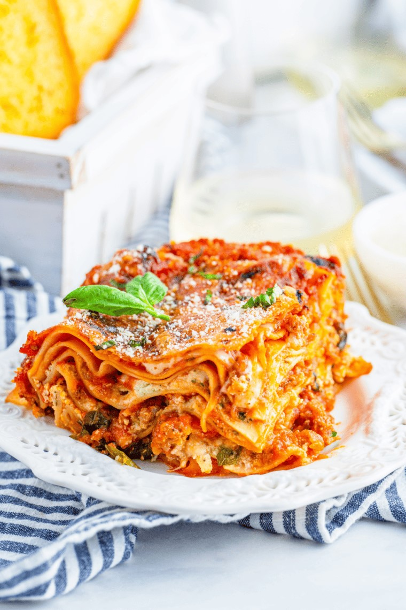

Air Fryer Lasagna

I love pasta, but I don't love waiting too long for the pasta to cook, especially lasagna. With this recipe, you can make it all in the air fryer! I hope you enjoy this recipe.
Check out the recipe!
Ingredients
- 1/2 pound ground Italian sausage
- 24 ounces marinara sauce
- 1 cup ricotta cheese
- 1 large egg, lightly beaten
- 2 tablespoons Parmesan cheese, grated
- 1 teaspoon garlic powder
- ½ teaspoon salt
- ½ teaspoon black pepper
- 8 sheets No-Boil Lasagna Noodles, lasagna sheets
- 6 basil leaves, fresh
- 2 cups mozzarella cheese, shredded
Steps
- In a medium-sized skillet over medium heat, brown the sausages,
break it up with cooking into crumbles. Once there is no pink left,
drain any excess fat off the sausage, take it off the heat and stir
in the marina sauce, set aside.
- Mix the ricotta, egg, parmesan, garlic powder, salt, and pepper in
a medium-sized bowl. Set aside.
- Spray an 8x8x2.5 inch baking dish with cooking spray.
- To assemble: add 1/4 of the sauce to the bottom of the baking dish.
Top with two sheets of lasagna noodles; you will need to break them
up to fit. Add 1/3 of the ricotta mixture on top, smooth it out over
the noodles. Tear two of the basil leaves and add them on top. Add
1/4th of the mozzarella on top of the basil. Repeat two more times
until you have a top layer of noodles, followed by the remaining
sauce. Add the remaining mozzarella.
- Preheat your air fryer to 360 degrees F, air fryer setting for 5 minutes.
- Add the lasagna and air fryer for 30 minutes, then cover the dish with foil
and air fry for another 20 minutes at 280 degrees F, air fryer setting.
- Let stand about 10 minutes before slicing. Garnish with more parmesan
cheese and chopped fresh basil.
- Plate, serve, and enjoy!